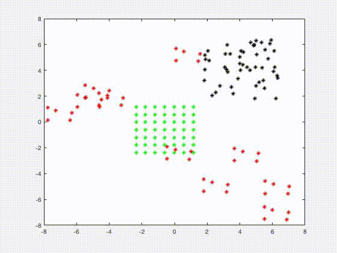

Code Dissemination
Preprints
Publications
Animation
|
 |
A new project: Mean-field control of planes in real time
1) black dots (Planes are initially allocated in the space randomly)
2) green dots (Target locations/distribution)
3) red dots (Obstacles)
Goal of the planes: move to the green dots from the black dots, avoiding self-colliding and colliding with the red dots.
|
|